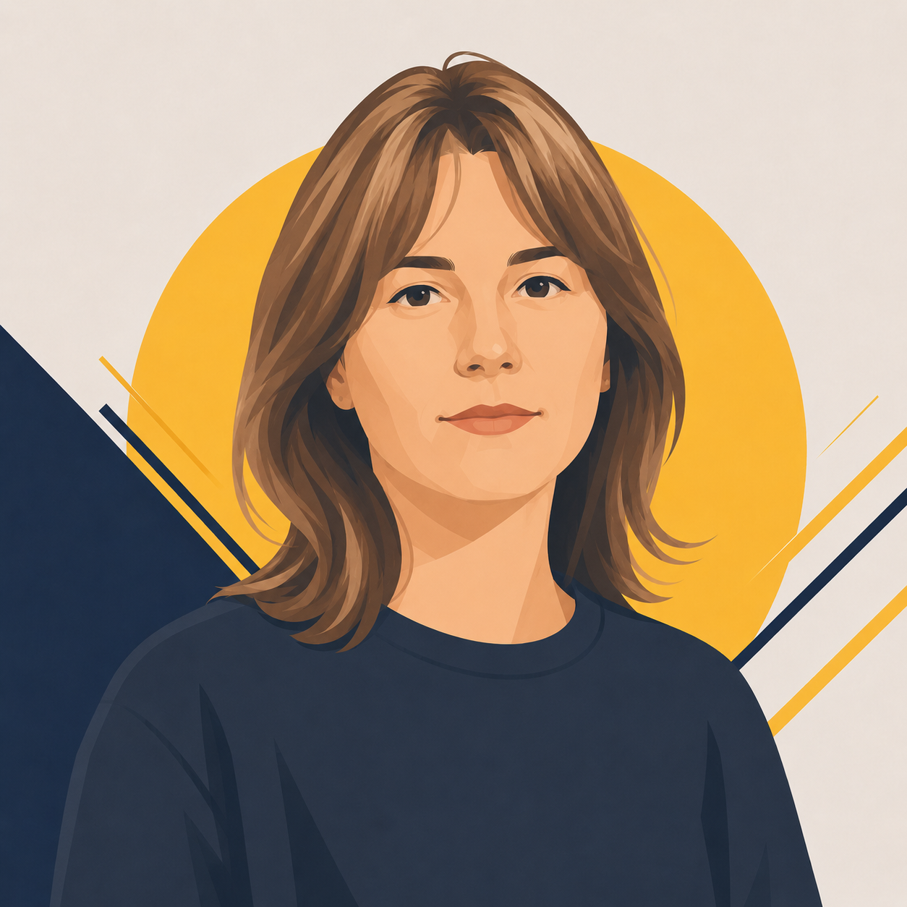

Стулій Ольга «Оля»
Дослідження аудиторії · комунікація · залучення молоді
Голос аудиторії в команді. Вірить, що починати треба не з техніки, а з сенсу — і вже пішла й опитала реальних підлітків і батьків, щоб перевірити ідеї на практиці.
Оля переконана: якщо просто поставити підлітка перед дроном і сказати «літай» — не спрацює. Спочатку треба відповісти на питання «навіщо?». Пояснити через психологію, живу історію та соціальний контекст — чому це важливо для країни і для них особисто. І тільки потім переходити до техніки.
«На початку курсу має бути психологічний, соціальний і трохи історичний контекст — пояснити, навіщо це захищати».
СЕНС
Навіщо? · Історія · Психологія · Виховання
МОТИВАЦІЯ
Ігри · Симулятори · Ролики · Соцреклама
ТЕХНІКА
Паяння · Збірка · Польоти · ТБ
Читай зверху вниз: спочатку сенс, потім мотивація, і лише тоді — технічні навички.
Оля розуміє: аудиторія неоднорідна. Є ті, хто вже горить темою — їм достатньо просто дізнатися про курс. А є ті, кому «все одно» — для них потрібен зовсім інший підхід. І для обох груп треба знайти правильну мову, можливо з допомогою психолога, який розуміє підлітковий вік.
«Є такі, кому не цікаво — і війна, і все. А є такі, кому досить сказати, що є курс, — і вони підуть».
Оля пропонує починати з того, що підліткам уже знайоме і цікаве — комп'ютерні симулятори, ігри. Це знижує бар'єр входу. Далі — поступово переходити до реальних навичок: від маленьких дронів до більших, від простого до складного.
Вхід через знайоме — комп'ютерні симулятори, безкоштовні додатки
Паяння, інструменти, ремонт — практичні руки від самого початку
Від маленьких дронів до більших — поступово, з технікою безпеки
«Таких хлопців зараз дуже легко зацікавити комп'ютерними симуляторами».
Що Ольга вже привносить у проєкт — і чому її голос є ключовим для того, щоб курс «зайшов» аудиторії.
Вже провела інтерв'ю з підлітками й батьками — перевіряє ідеї на реальних людях, а не на припущеннях.
Стратегія промо та контенту для різних сегментів — від соцреклами для байдужих до інформування зацікавлених.
Представляє інтереси підлітків і батьків у команді — стежить, щоб рішення базувалися на реальному запиті.
Розуміє: підлітки — це окрема аудиторія з особливою психологією. Пропонує залучити профільного психолога.
Додаткові думки з її запису, які показують, як Оля бачить аудиторію і що для неї важливо.
У школі історія була нудна — зубріння дат і імен. А зараз мені цікаво. Треба подати інакше.
Підлітки — це окрема каста. Можливо, треба психолог, який знає, як їх зацікавити і як з ними спілкуватися.
Поремонтувати дрони ж теж треба вміти. Скільки заряду тримається, ця технічна сторона — все це важливо знати.
Складено за голосовим записом Олі та анкетою на вступ. Дослідження аудиторії від Олі лягло в основу окремого розбору.